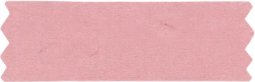
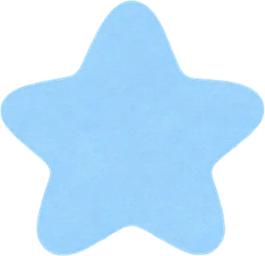
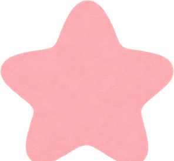

open source · MIT · zero dependencies
sticker
-
mask
截图之前，把不想给人看的
用贴纸盖住。
Drag, pinch, rotate, stretch. Tap Done, then take a normal screenshot. Built for the phone.
miya-tonya.github.io
/sticker-mask
Alex
Did the transfer go through?
09:12
Yes, ref 4821-9930-1177, account ending 2291.
09:13
And the address?
09:13
3-1-1 Example St. Phone 090-1234-5678.
09:14
×